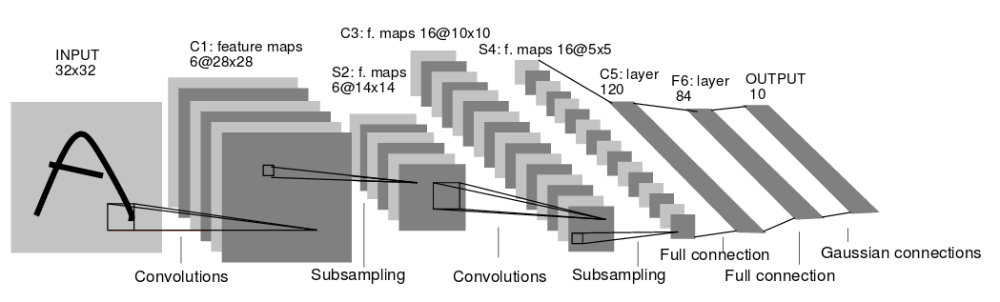

LeNet. The first successful applications of Convolutional Networks were developed by Yann LeCun in 1990’s. Of these, the best known is the LeNet architecture that was used to read zip codes, digits, etc.
Main Moments

- The input image is 32x32 pixel image , this is larger than the largest character in database (at most 20x20 pixels centered in 28x28)
- Reason : it s desirable that potential disictive features such as stroke end-points or corner can appear in the center of the receptive field of the highest level feature detector
- Normalization: the values of the imput pixels are normilized so that the background level (white) corresponds to a value of -0.1 and the foreground (black) corresponds to 1.175
- This makes the mean input rougly 0, and the variance rougly 1 which accelerates learning.
- Parameters :
- Cx - convolutional layers
- Sx - subsampling layers
- Fx - fully connected layer
- Participially connection between layers
- Layer C3 is convolution layer with 16 feature maps. Each unit in each feature map is connected to several 5x5 neighborhoods as identical locations in a SUBSET of S2's feature maps.

- Reason :
- First : a non complete connection scheme keeps the number of connections within reasonable bounds.
- Second : It forces a break of symmetry in he net work.
- Layer C3 is convolution layer with 16 feature maps. Each unit in each feature map is connected to several 5x5 neighborhoods as identical locations in a SUBSET of S2's feature maps.
- Output layer is composed of Euclidean Radial Basis Functions units
- Results on mnist dataset
- after 10 passes through the traing set the error is 0.95%
- after 19 passes 0.35%
I. Cause I do not know how to make particial connection we may change it to dropuot at the level of 50%.. cause as it folows from the table approximatelly 50% elements are connected . Moreover I could find several examples of LeNet 5 and non of them has participially connected layers
- https://github.com/nihit/TensorFlow101/blob/master/mnist.py
- http://pastebin.com/p4KDZ0kt
- https://ml4a.github.io/guides/convolutional_neural_networks/
- http://ankivil.com/mnist-database-and-simple-classification-networks/
II Proposed variation of Lenet 5
- Data preporation
(X_train, y_train), (X_test, y_test) = mnist.load_data()
X_train = X_train.reshape(X_train.shape[0], 1, 28, 28).astype('float32') / 255
X_test = X_test.reshape(X_test.shape[0], 1, 28, 28).astype('float32') / 255
Y_train = np_utils.to_categorical(y_train, 10)
Y_test = np_utils.to_categorical(y_test, 10)
('X_train shape:', (60000, 1, 28, 28))
(60000, 'train samples')
(10000, 'test samples')
Train on 60000 samples, validate on 10000 samples
- Model


- Model Performance
Epoch 1/15
60000/60000 [==============================] - 17s - loss: 0.3493 - acc: 0.8924 - val_loss: 0.0842 - val_acc: 0.9731
Epoch 2/15
60000/60000 [==============================] - 17s - loss: 0.1249 - acc: 0.9625 - val_loss: 0.0579 - val_acc: 0.9823
Epoch 3/15
60000/60000 [==============================] - 17s - loss: 0.0981 - acc: 0.9710 - val_loss: 0.0494 - val_acc: 0.9832
Epoch 4/15
60000/60000 [==============================] - 17s - loss: 0.0858 - acc: 0.9743 - val_loss: 0.0442 - val_acc: 0.9847
Epoch 5/15
60000/60000 [==============================] - 17s - loss: 0.0736 - acc: 0.9785 - val_loss: 0.0382 - val_acc: 0.9863
Epoch 6/15
60000/60000 [==============================] - 17s - loss: 0.0653 - acc: 0.9806 - val_loss: 0.0352 - val_acc: 0.9875
Epoch 7/15
60000/60000 [==============================] - 17s - loss: 0.0608 - acc: 0.9819 - val_loss: 0.0346 - val_acc: 0.9884
Epoch 8/15
60000/60000 [==============================] - 17s - loss: 0.0564 - acc: 0.9828 - val_loss: 0.0328 - val_acc: 0.9884
Epoch 9/15
60000/60000 [==============================] - 17s - loss: 0.0533 - acc: 0.9835 - val_loss: 0.0314 - val_acc: 0.9886
Epoch 10/15
60000/60000 [==============================] - 17s - loss: 0.0505 - acc: 0.9854 - val_loss: 0.0306 - val_acc: 0.9896
Epoch 11/15
60000/60000 [==============================] - 17s - loss: 0.0474 - acc: 0.9856 - val_loss: 0.0297 - val_acc: 0.9893
Epoch 12/15
60000/60000 [==============================] - 17s - loss: 0.0447 - acc: 0.9868 - val_loss: 0.0282 - val_acc: 0.9907
Epoch 13/15
60000/60000 [==============================] - 17s - loss: 0.0422 - acc: 0.9871 - val_loss: 0.0272 - val_acc: 0.9910
Epoch 14/15
60000/60000 [==============================] - 17s - loss: 0.0406 - acc: 0.9884 - val_loss: 0.0281 - val_acc: 0.9896
Epoch 15/15
60000/60000 [==============================] - 17s - loss: 0.0399 - acc: 0.9876 - val_loss: 0.0279 - val_acc: 0.9905
('Test score:', 0.027922185424105555)
('Test accuracy:', 0.99050000000000005)
- Model Structure
modelL5.h5 contains:
Root attributes:
layer_names: ['convolution2d_8' 'activation_13' 'convolution2d_9' 'activation_14'
'maxpooling2d_5' 'dropout_6' 'flatten_4' 'dense_7' 'activation_15'
'dropout_7' 'dense_8' 'activation_16']
activation_13
Attributes:
weight_names: []
Dataset:
activation_14
Attributes:
weight_names: []
Dataset:
activation_15
Attributes:
weight_names: []
Dataset:
activation_16
Attributes:
weight_names: []
Dataset:
convolution2d_8
Attributes:
weight_names: ['convolution2d_8_W:0' 'convolution2d_8_b:0']
Dataset:
convolution2d_8_W:0: (32, 1, 3, 3)
convolution2d_8_b:0: (32,)
convolution2d_9
Attributes:
weight_names: ['convolution2d_9_W:0' 'convolution2d_9_b:0']
Dataset:
convolution2d_9_W:0: (32, 32, 3, 3)
convolution2d_9_b:0: (32,)
dense_7
Attributes:
weight_names: ['dense_7_W:0' 'dense_7_b:0']
Dataset:
dense_7_W:0: (4608, 128)
dense_7_b:0: (128,)
dense_8
Attributes:
weight_names: ['dense_8_W:0' 'dense_8_b:0']
Dataset:
dense_8_W:0: (128, 10)
dense_8_b:0: (10,)
dropout_6
Attributes:
weight_names: []
Dataset:
dropout_7
Attributes:
weight_names: []
Dataset:
flatten_4
Attributes:
weight_names: []
Dataset:
maxpooling2d_5
Attributes:
weight_names: []
Dataset:
--------------
{'class_name': 'Convolution2D', 'config': {'b_regularizer': None, 'W_constraint': None, 'b_constraint': None, 'name': 'convolution2d_8', 'activity_regularizer': None, 'trainable': True, 'dim_ordering': 'th', 'nb_col': 3, 'subsample': (1, 1), 'init': 'glorot_uniform', 'bias': True, 'nb_filter': 32, 'input_dtype': 'float32', 'border_mode': 'valid', 'batch_input_shape': (None, 1, 28, 28), 'W_regularizer': None, 'activation': 'linear', 'nb_row': 3}}
--------------
{'class_name': 'Activation', 'config': {'activation': 'relu', 'trainable': True, 'name': 'activation_13'}}
--------------
{'class_name': 'Convolution2D', 'config': {'W_constraint': None, 'b_constraint': None, 'name': 'convolution2d_9', 'activity_regularizer': None, 'trainable': True, 'dim_ordering': 'th', 'nb_col': 3, 'subsample': (1, 1), 'init': 'glorot_uniform', 'bias': True, 'nb_filter': 32, 'border_mode': 'valid', 'b_regularizer': None, 'W_regularizer': None, 'activation': 'linear', 'nb_row': 3}}
--------------
{'class_name': 'Activation', 'config': {'activation': 'relu', 'trainable': True, 'name': 'activation_14'}}
--------------
{'class_name': 'MaxPooling2D', 'config': {'name': 'maxpooling2d_5', 'trainable': True, 'dim_ordering': 'th', 'pool_size': (2, 2), 'strides': (2, 2), 'border_mode': 'valid'}}
--------------
{'class_name': 'Dropout', 'config': {'p': 0.25, 'trainable': True, 'name': 'dropout_6'}}
--------------
{'class_name': 'Flatten', 'config': {'trainable': True, 'name': 'flatten_4'}}
--------------
{'class_name': 'Dense', 'config': {'W_constraint': None, 'b_constraint': None, 'name': 'dense_7', 'activity_regularizer': None, 'trainable': True, 'init': 'glorot_uniform', 'bias': True, 'input_dim': None, 'b_regularizer': None, 'W_regularizer': None, 'activation': 'linear', 'output_dim': 128}}
--------------
{'class_name': 'Activation', 'config': {'activation': 'relu', 'trainable': True, 'name': 'activation_15'}}
--------------
{'class_name': 'Dropout', 'config': {'p': 0.5, 'trainable': True, 'name': 'dropout_7'}}
--------------
{'class_name': 'Dense', 'config': {'W_constraint': None, 'b_constraint': None, 'name': 'dense_8', 'activity_regularizer': None, 'trainable': True, 'init': 'glorot_uniform', 'bias': True, 'input_dim': None, 'b_regularizer': None, 'W_regularizer': None, 'activation': 'linear', 'output_dim': 10}}
--------------
{'class_name': 'Activation', 'config': {'activation': 'softmax', 'trainable': True, 'name': 'activation_16'}}
--------------
4 (32, 1, 3, 3)
9
--------------
1 (32,)
--------------
4 (32, 32, 3, 3)
288
--------------
1 (32,)
--------------
2 (4608, 128)
--------------
1 (128,)
--------------
2 (128, 10)
--------------
1 (10,)
Model files : modelL5.h5
weightsL5_1.csv
weightsL5_2.csv - bias
weightsL5_3.csv
weightsL5_4.csv- bias
weightsL5_5.csv
weightsL5_6.csv- bias
weightsL5_7.csv
weightsL5_8.csv- bias